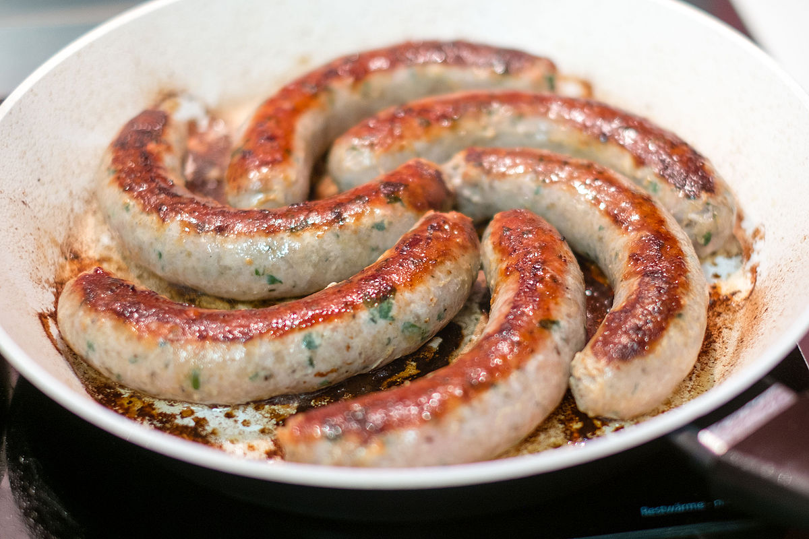

Home
Sausage Bake

Description
A delicious sausage bake, quick and easy to make!
Ingredients
- 1 red pepper, deseeded and cut into chunks
- 1 yellow pepper, deseeded and cut into chunks
- 1 orange pepper, deseeded and cut into chunks
- 250g/9oz gnocchi
- 1 tbsp olive oil
- 4 pork sausages
- Salt and freshly ground black pepper
Steps
- Preheat the oven to 200C/180C Fan/Gas 6.
- Toss together the peppers, gnocchi, olive oil and a generous amount of salt and pepper on a large baking tray.
- Place the sausages on the tray. Roast for 25 minutes, or until the sausages and gnocchi are golden-brown and
the peppers are soft and have started to brown around the edges. Serve.